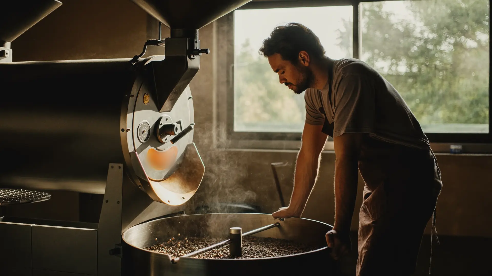
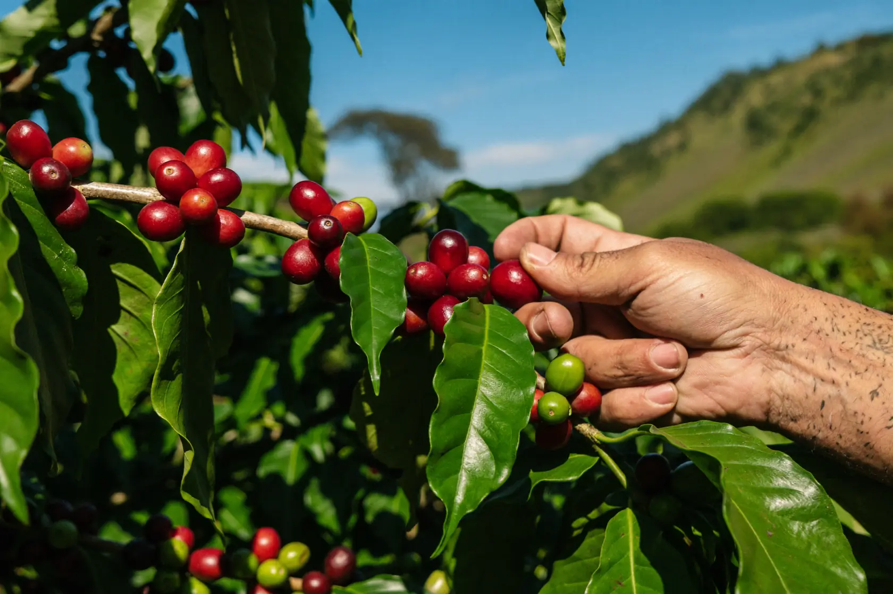
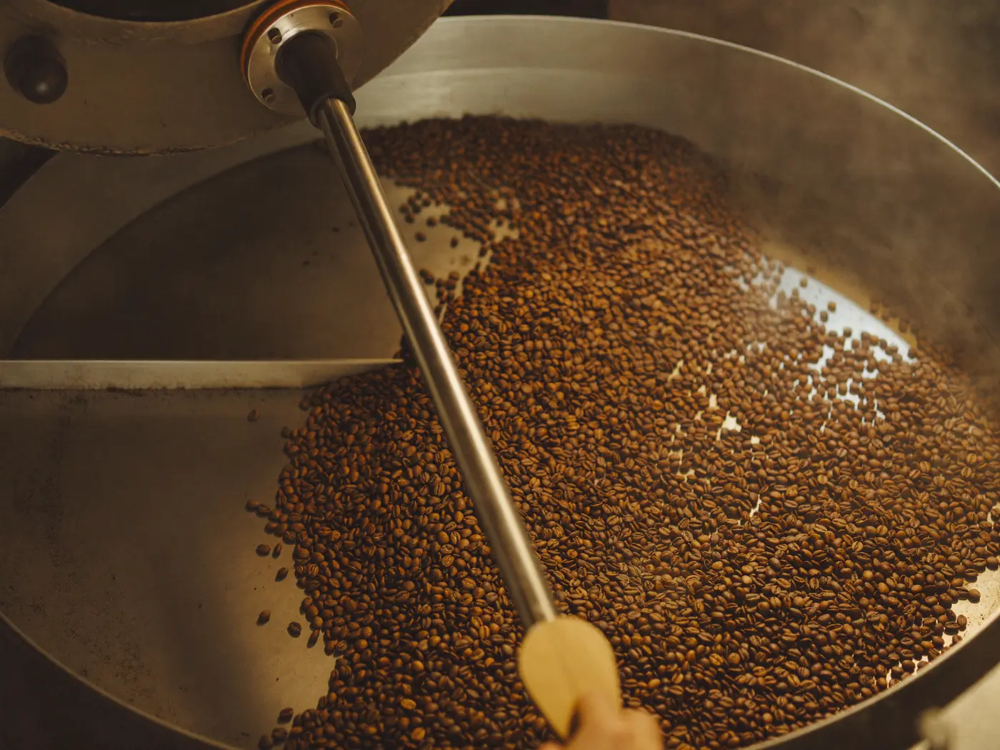

LIGHT · FILTER
Ethiopia Guji
Washed · 1,980 m · heirloom varieties
apricot · bergamot · a clean, tea-like finish
aroma8.7
acidity8.9
body7.8
sweetness8.5
FC 8:52 · DEV 20.1% · ROASTED TUE
250 g$21

Small-batch roastery · est. on a Tuesday
At 196° the bean cracks — an audible pop, the roast's one honest clock. We roast toward that sound twice a week, and we log everything.
The whole curve, annotated — batch 447 as it ran last Tuesday. With JavaScript, scrolling replays the roast; without it, you're reading the finished log, which is the same truth.
Every batch we sell carries its numbers. Not because numbers make coffee taste better — because a roaster who shows the log has nowhere to hide a stale batch.
| Batch | Coffee | Charge | First crack | Drop | Dev |
|---|---|---|---|---|---|
| 443 | Ethiopia Guji — washed | 204°C | 8:47 | 10:58 | 19.8% |
| 444 | Colombia Huila — honey | 202°C | 9:04 | 11:21 | 20.3% |
| 445 | Sumatra Kerinci — natural | 200°C | 9:12 | 11:40 | 21.1% |
| 446 | Colombia Huila — honey | 202°C | 9:06 | 11:42 | 22.9% |
| 447 | Ethiopia Guji — washed | 204°C | 8:52 | 11:04 | 20.1% |
| 446 ran 19 seconds long chasing sweetness and overshot — it's staff espresso now. We drink our mistakes; we don't sell them. | |||||
We cup every roast day, blind, against the last batch. The bars are our table's medians — an honest instrument, not a boast: nothing here scores itself 10.
Washed · 1,980 m · heirloom varieties
apricot · bergamot · a clean, tea-like finish
FC 8:52 · DEV 20.1% · ROASTED TUE
250 g$21
Honey process · 1,700 m · pink bourbon
panela · red apple · round and patient
FC 9:04 · DEV 20.3% · ROASTED TUE
250 g$19
Natural · 1,400 m · sigarar utang
dark cherry · cacao · a long, syrupy close
FC 9:12 · DEV 21.1% · ROASTED FRI
250 g$18

BEFORE THE ROAST
Every bean in the drum was a cherry on a branch at altitude. We buy from farms we can name — Guji washing stations, a Huila family lot, a Kerinci cooperative — and the log's first column belongs to them.

TWICE A WEEK
Everything before first crack is preparation; everything after it is judgment. The window between the crack and the drop — two minutes, give or take — is where a batch becomes itself. We spend our week getting those two minutes right.
Come on a roast morning and you can hear it from the bar: a quiet, irregular popping, like rain starting on a tin roof. That sound is the only alarm clock this building has.
— THE BENCH AT FIRST CRACK
HOURS
THE ROASTERY
14 Turning Point Lane